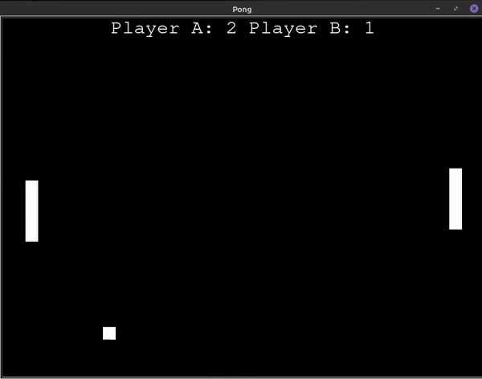

Oct 20, 2021

Sus Editor is a text editor with Pixels VGA Font. Written with Simple DirectMedia Layer is a cross-platform development library designed to provide low-level access to audio, keyboard, mouse, joystick, and graphics hardware via OpenGL and Direct3D.
The keys are just the same for every editor F1 is for saving the file.
What I learned:
- Learn about SDL2(Simple DirectMedia Layer).
- Learn about Hardware-accelerated software.
- Learn about Bitmap Font.
- Learn the basics of ASCII.
- The most important thing I learned is how a library can help you create cross-platform software.
Oct 10, 2021
This CLI software is for notifying you when your favorite streamer goes live on Twitch.
To run the software
./main.py <twitch_streamer_username>
What I learned:
- Learn about requests module of Python.
- Learn about Twitch API.
- Learn about mpg123 in Linux for running sound.
- Learn to keep user credentials inside a .env file
- The most important thing I learned is with programming you could know when you favorite streamer is streaming and don't miss a change to talk with them.
May 2, 2021

Chip-8 is a simple, interpreted, programming language that was first used on some do-it-yourself computer systems.
The keys depend on the game, in the chip-8 emulator there are only 16 keys available, so it would be 1234, qwer, asdf, and zxcv.
What I learned:
- Learn about Bitwise Operations.
- Learn about Hexadecimal.
- Learn about computing opcode to Chip-8 Emulator interpreter.
- Learn the basics of executing instruction set on an old system.
- The most important thing I learned is how a computer works in the old days and how it got develop into the modern day. Also learned about Registers, RAM, CPU, Bytes, Bits, etc.
November 9, 2020

Space Invaders is a two-dimensional fixed shooter game in which the player controls a ship with lasers by moving the y-axis across the bottom of the screen. The ship will have unlimited lasers to fire at descending aliens.
The basic keys are arrows and spaces, the arrows key are for moving, and the spaces key for firing. Users can see the score on the top left corner and their live status on the top right corner.
What I learned:
- I learned how important good code and the meaning of good software design.
- I learned Object-Oriented Programming.
- I learned the importance of a 2-dimensional list in Python.
- While building Space Invaders, I learned S.O.L.I.D Principles.
- The most important thing I learned while building Space Invaders is, how to use the Single Responsibility Principle on the game, class should have only one job. So if a class has more than one responsibility, it becomes coupled.
October 16, 2020

Hangman is a guessing letters game, the player can only guess one letter at a time to solve the word puzzle.
Hacks to win:
- Try guessing the vowels- A good strategy is to guess a few vowels. With five vowels in the English alphabet, you'll quickly see some word patterns.
- Etaoin shrdlu- "Etaoin shrdlu" is just a list of the most common letters used in English, so try to guess these letters.
What I learned:
- I learned how to see patterns and not to use duplicate code.
- I learned if __name__ == "__main__".
- I learned the importance of algorithm, for example; WIDTH / 2 - text.get_width() / 2, HEIGHT / 2 - text.get_height() / 2 = Center of screen.
- While building Hangman, I understand making use of capitalizing variables for constant.
- The most important thing I learned while building Hangman is, how to have a good design for the game and the importance of laying out the step by step process of building.
October 4, 2020
Pong is a table-tennis-themed arcade video game. The main intention of creating Pong was to play with friends and families. The two paddles return the ball back and forth. The score is kept by the number at the top of the screen.
Users can play Pong with just "WS" and "UP / DOWN ARROWS". The wide paddle makes users feel less frustrated. As mentioned, the reason I created Pong was to play with friends and families and have a fun time rather than competing.
What I learned:
- I learned how to use the turtle module
- I learned turtle.ontimer(tick, 10). So that speed of the ball doesn't depend on the CPU GHz
- I learned how to keep track of the score
- While building Pong, I deeply understand functions, while, and global variables
- The most important thing I learned while building Pong is, even a basic module like turtle could build one complete game.
September 30, 2020

I wrote the graphic interface Tic Tac Toe (AI) in Python with Pygame library, and Pygame comes very handly when building games because it has many methods and functions built in.
Users can play Tic Tac Toe without any human next to them to play, but instead, they can play with the AI and see if the AI is clever enough to beat the user.
What I learned:
- I learned how to design grid boxes, and made the boxes visually easy to select for the user to play.
- I learned about Frame Per Second in games and the process for refreshing every second rather than using CPU to run the game.
- I learned about os.path.join so that I didn't need to hardcode the path of picture for X and O.
- I learned about MOUSEDOWN, collision, and track the state of the game.
- The most important thing I learned while building Tic Tac Toe is thinking logically and reasoning up from fundamental truths.